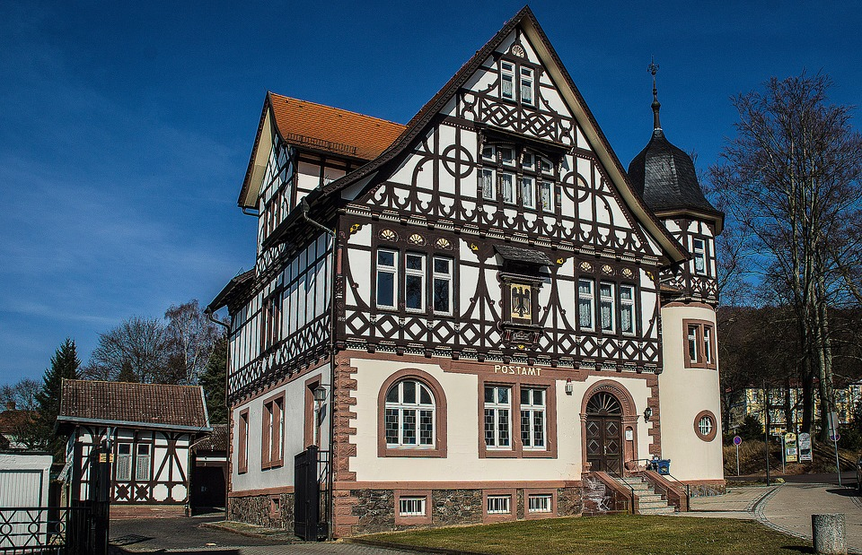
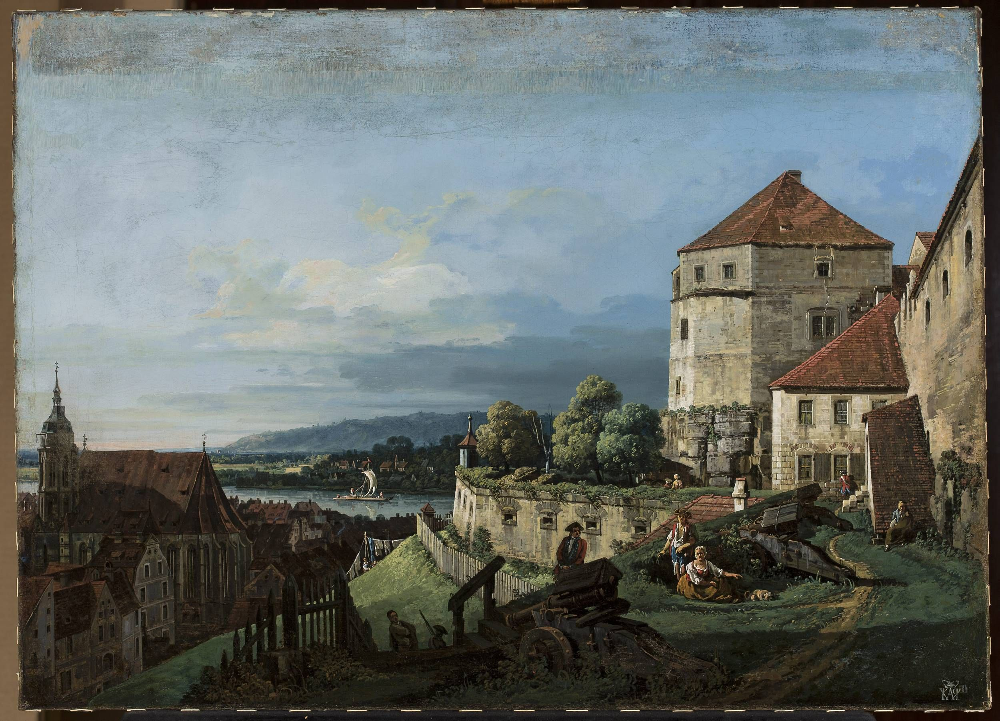
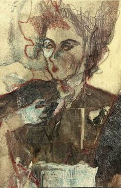

Przedmowa
Jako oficer wojsk francuskich uczestniczyłem w oblężeniu Saragossy. W kilka dni po zdobyciu miasta, zapuściwszy się w dość odległą dzielnicę, zwróciłem uwagę na niewielki, ładnie zbudowany domek, którego, jak mi się zrazu zdawało, Francuzi nie zdążyli jeszcze splądrować.
Zdjęty ciekawością, zbliżyłem się i zastukałem w drzwi. Okazało się, że nie są zamknięte, pchnąłem je więc lekko i wszedłem do środka. Wołałem, szukałem - nie znalazłem nikogo. Odniosłem wrażenie, że wnętrze ogołocone jest z cenniejszych przedmiotów;
na stołach i w szafach pozostały jedynie błahe drobiazgi. Tylko na podłodze, w kącie, zauważyłem kilka zapisanych zeszytów. Przejrzałem ich zawartość. Był to rękopis hiszpański; jakkolwiek bardzo słabo znałem ten język, to przecież zdołałem pojąć, żem znalazł rzecz zajmującą: rękopis zawierał historie o kabalistach, zbójcach i upiorach. Lektura niezwykłych opowieści zdała mi się nader stosowną dla oderwania umysłu od trudów wojennej wyprawy. Osądziwszy, że rękopis utracił na zawsze prawowitego właściciela, bez wahania wziąłem go ze sobą.
Po pewnym czasie zmuszeni byliśmy opuścić Saragossę. Nieszczęściem znalazłem się z dala od głównego korpusu armii i wraz z moim oddziałem wpadłem w ręce nieprzyjaciela. Mniemałem, że wybiła moja ostatnia godzina. Gdy dotarliśmy tam, dokąd nas prowadzono, Hiszpanie zaczęli odbierać nam nasze rzeczy. Prosiłem o pozwolenie zatrzymania jednego tylko przedmiotu, który zresztą nie mógł przedstawiać dla nich żadnej wartości, a mianowicie znalezionego przeze mnie rękopisu. Początkowo robili mi niejakie trudności, na koniec zwrócili się o radę do kapitana. Ten, rzuciwszy okiem na zeszyty, osobiście mi podziękował za ocalenie dzieła; do którego przywiązywał wielką wagę, rękopis bowiem zawierał historię jednego z jego przodków. Wyjaśniłem, w jaki sposób wszedłem w posiadanie cennych zeszytów. Hiszpan wziął mnie do swej kwatery, dobrze się ze mną obchodził i zatrzymał na dłuższy pobyt. Uproszony przeze mnie, tłumaczył rękopis na język francuski, ja zaś wiernie zapisywałem jego słowa.
Dzień pierwszy

Hrabia Olavidez jeszcze nie był sprowadził osadników do gór Sierra Morena. Strome to pasmo, które oddziela Andaluzję od Manszy, zamieszkiwali wówczas kontrabandziści, rozbójnicy i kilku Cyganów, o których mówiono, że pożerają ciała zabitych wędrowców. Stąd nawet poszło hiszpańskie przysłowie:
Las gitanas de Sierra Morena quieren carne de hombres. Nie dość na tym. Podróżny, który odważył się zapuścić w tę dziką okolicę, napastowany bywał, jak mówiono, przez tysiączne okropności, na których widok drżała najzimniejsza odwaga. Słyszał płaczliwe głosy mieszające się z hukiem potoków, śród poświstu burzy mamiły go błędne ogniki, a niewidzialne ręce popychały w bezdenne przepaście.
Wprawdzie można było czasami znaleźć na tej strasznej drodze jaką ventę, czyli samotną gospodę, ale duchy, bardziej diabelskie niż sami oberżyści, zmusiły tych ostatnich do ustąpienia im miejsca i oddalenia się w kraje, gdzie jedynie głos sumienia przerywał im spoczynek, a - z dwojga złego jedno wybierając - oberżyści woleli z tym drugim mieć do czynienia. Gospodarz z Andujar świadczył się św. Jakubem z Komposteli, że w opowiadaniach tych nie ma żadnego fałszu; dodał nawet, że pachołki Świętej Hermandady zawsze wymawiają się od wycieczek w góry Sierra Morena, podróżni zaś jeżdżą na Jaen lub Estremadurę.
Odpowiedziałem mu na to, że taki wybór może przypadać do smaku podróżnym zwyczajnego rodzaju, ale gdy król don Filip V raczył zaszczycić mnie godnością kapitana w gwardii wallońskiej. święte prawa honoru nakazują mi udać się najkrótszą drogą do Madrytu, chociażby była ona zarazem najniebezpieczniejsza.
- Młody panie - odparł gospodarz - Wasza Miłość dozwoli mi zwrócić uwagę, że jeżeli król zaszczycił was stopniem kapitana, zanim najlżejszy mech nie uczynił tego samego zaszczytu brodzie Waszej Miłości, słusznym byłoby przede wszystkim dać dowody roztropności, tym bardziej że skoro złe duchy raz się do jakiego miejsca przywiążą...
Byłby mi jeszcze więcej nabredził. ale spiąłem konia ostrogami i wtedy dopiero zatrzymałem się, gdym sądził, że mnie już słowa jego nie dojdą. Natenczas, obróciwszy się. dostrzegłem go wywijającego rękami i wskazującego mi drogę na Estremadurę. Służący mój Lopez i mulnik Moskito spoglądali na mnie litościwym wzrokiem, który zdawał się potwierdzać przestrogi oberżysty. Udawałem, jakobym nic z tego nie rozumiał, i zapuściłem się między zarośla, tam gdzie później założono osadę nazwaną La Carlota.
Nie miejscu, gdzie dziś stoi dom pocztowy, znajdowało się wówczas schronienie, dobrze znane mulnikom i nazwane przez nich Los Alcornoques. czyli Korkowe Dęby, ponieważ dwa piękne drzewa tego rodzaju ocieniały obfite źródło, ocembrowane białym marmurem. Była to jedyna woda i jedyny cień. jaki można było napotkać od Andujar aż do gospody Venta Quemada, obszernej i wygodnej, chociaż wystawionej pośród pustyni. Właściwie mówiąc był to stary zamek mauretański, który margrabia Peńa Quemada kazał wypo-rządzić i stąd nazwano go Venta Quemada. Margrabia wynajął go następnie pewnemu mieszczaninowi z Murcji, który tu założył na j znaczniejszą na całym trakcie gospodę. Podróżni więc wyjeżdżali rano z Andujar, spożywali w Los Alcornoques zapasy, jakie ze sobą przywieźli, i udawali się na nocleg do Venta Quemada. Tam często przepędzali następny dzień, ażeby przygotować się do przebycia gór i zaopatrzyć w nowe zapasy.
Taki był plan i mojej podróży.
Ale właśnie gdy zbliżaliśmy się do Korkowych Dębów i wspominałem Lopezowi o potrzebie posiłku, spostrzegłem, że Moskito znikł nam wraz z mułem, objuczonym wszystkimi zapasami. Lopez odrzekł mi, że mulnik pozostał kilka staj za nami, aby poprawić coś przy jukach. Czekaliśmy na niego, postąpiliśmy kilka kroków naprzód, potem znowu zatrzymaliśmy się, wołaliśmy, wróciliśmy tą samą drogą, aby go wynaleźć, ale wszystko na próżno.
Moskito znikł i uniósł z sobą nasze najdroższe nadzieje, to jest cały nasz obiad. Ja sam tylko byłem na czczo, Lopez bowiem przez cały czas zajadał ser z Toboso, który wziął ze sobą na drogę, mimo to jednak bynajmniej nie był weselszy ode mnie i mruczał przez zęby, że gospodarz z Andujar miał słuszność i że pewnie złe duchy porwały biednego Moskita.
Przybywszy do Los Alcornoques, ujrzałem przy źródle koszyk nakryty winnym liściem: musiały w nim być owoce, zapomniane przez jakiegoś podróżnego. Ciekawie pogrążyłem weń rękę i z przyjemnością znalazłem cztery piękne figi i pomarańczę. Ofiarowałem dwie figi Lopezowi, ale podziękował mi. mówiąc, że może zaczekać do wieczora. Zjadłem więc sam wszystko i następnie chciałem napić się wody ze źródła. Lopez wstrzymał mnie, dowodząc, że woda szkodzi po owocach, i podał mi trochę pozostałego mu jeszcze alikantu. Przyjąłem poczęstunek, ale zaledwie uczułem wino w żołądku, gdym doznał nagłego ściśnienia serca. Niebo i ziemia zakręciły mi się przed oczyma i byłbym niezawodnie zemdlał, gdyby Lopez nie był mi pośpieszył na pomoc. Otrzeźwił mnie, mówiąc, że nie powinienem się dziwić i że stan ten pochodził z czczości i znużenia. W istocie, nie tylko odzyskałem siły, ale nawet czułem się w stanie nadzwyczajnego podniecenia. Okolica zdawała się połyskiwać tysiącznymi barwami, przedmioty zaiskrzyły się w mych oczach, jak gwiazdy podczas letniej nocy, i krew zaczęła mi bić gwałtownie, zwłaszcza na szyi i skroniach.
HISTORIA EMINY I JEJ SIOSTRY ZIBELDY
Ojcem naszym jest Jazir Gomelez, wuj deja panującego dziś w Tunisie. Nie miałyśmy brata, nie znałyśmy nigdy ojca, a ponieważ od najmłodszych lat zamknięte byłyśmy w murach seraju, zbywało nam na najmniejszym o waszej płci pojęciu. Natura jednak obdarzyła nas niewypowiedzianą skłonnością do miłości i, w braku innych osób, pokochałyśmy się wzajemnie. Przywiązanie to zaczęło się od pierwszych lat dziecinnych. Zalewałyśmy się łzami, gdy chciano nas chociaż na chwilę rozdzielić. Gdy jedną z nas skarcono, druga wybuchała płaczem. W dzień bawiłyśmy się przy jednym stoliku, a w nocy podzielałyśmy jedno posłanie.
To tak żywe uczucie zdawało się razem z nami wzrastać i nowych sił na orało przez okoliczność, o której ci opowiem. Miałam wtedy szesnaście lat, a moja siostra czternaście. Od dawna zauważyłyśmy, że nasza matka pilnie przed nami chowa niektóre książki. Z początku zwracałyśmy na to mało uwagi, i tak dość już znudzone książkami, na których nas czytać uczono, ale z wiekiem przyszła nam ciekawość. Wypatrzyłyśmy
chwilę, gdy zakazana szafka była otwarta, i szybko porwałyśmy mały tomik, który opisywał miłostki Medżnuna i Lejli, tłumaczone z perskiego przez Ben-O-mara. To zachwycające dzieło, ognistymi barwami malujące rozkosze miłości, zapaliło nasze młode głowy. Nie mogłyśmy ich zrozumieć, nie widząc nigdy osób waszej płci, ale powtarzałyśmy sobie nowe dla nas wyrażenia. Przemawiałyśmy mową kochanków i na koniec zapragnęłyśmy kochać się ich sposobem. Ja wzięłam na siebie rolę Medżnuna, siostra zaś moja Lejli. Naprzód oświadczyłam jej moją namiętność, układając kwiaty w bukiecie (jest to rodzaj wzajemnego porozumienia się w całej Azji używany), następnie rzucałam jej pełne ognia spojrzenia, padałam przed nią na kolana, całowałam ślady jej stóp, zaklinałam wietrzyk, aby jej moje żale zanosił, i chciałam go rozpłomienić gorącymi westchnieniami.
Zibelda. wierna naukom mistrza, naznaczyła mi schadzkę. Upadłam jej do kolan, całowałam ją po rękach, oblewałam łzami jej nogi. Kochanka moja z początku lekki opór stawiała, po chwili jednak dozwalała mi ukraść kilka pocałunków i wreszcie podzielała zupełnie wrzące moje uczucia. Dusze nasze zdawały się razem zlewać i doskonalszego szczęścia nie pojmowałyśmy.
Nie pamiętam, jak długo bawiły nas te namiętne sceny, ale niebawem gwałtowność naszych uczuć znacznie się uspokoiła. Powzięłyśmy chęć do niektórych nauk, szczególnie zaś do znajomości roślin, których przymioty poznawałyśmy z dzieł sławnego Averroesa. Matka moja, w przekonaniu, że nigdy nie można dość się uzbroić przeciw nudom seraju, z przyjemnością spoglądała na nasze zatrudnienia i chcąc nam ułatwić naukę, kazała sprowadzić z Mekki świętą niewiastę, zwaną Hazareta, czyli świętą świętych. Hazareta uczyła nas praw Proroka i wykładała nam nauki tym czystym i melodyjnym językiem, jakiego używa dziś jedno tylko pokolenie Koreisz. Nie mogłyśmy dość się jej nasłuchać i niebawem umiałyśmy prawie cały Koran na pamięć. Następnie matka opowiadała nam historię naszej rodziny i udzieliła nam mnóstwo pamiętników, z których jedne były pisane po arabsku, inne zaś po hiszpańsku.
Drogi Alfonsie, nie uwierzysz, jak nam zbrzydła wasza religia, jak znienawidziłyśmy jej kapłanów. Z drugiej za to strony koleje i nieszczęścia rodziny, której krew w żyłach naszych płynęła, niesłychanie nas zajmowały. Raz unosiłyśmy się nad Saidem Gomelezem, który cierpiał męczeństwa w więzieniach inkwizycji, to znowu nad jego synowcem Leissem, który długi czas prowadził w górach życie dzikie i mało różne od życia zwierząt drapieżnych. Takie opisy obudziły w nas podziw dla mężczyzn, chciałyśmy ich widzieć i często wstępowałyśmy na taras ogrodowy, aby choć z daleka spostrzec marynarzy na jeziorze Goletta lub wiernych, śpieszących do kąpieli Hamam-Nef. Chociaż nie zapomniałyśmy nauk zakochanego Medżnuna, jednak odtąd nigdy już więcej ich nie powtarzałyśmy. Mniemałam nawet, że w uczuciu moim dla siostry wygasła zupełnie namiętność, gdy wtem nowy wypadek przekonał mnie, że się myliłam.
Pewnego dnia matka nasza przyprowadziła nam jakąś księżnę z Tafiletu, kobietę w podeszłym wieku. Przyjęłyśmy ją jak można najlepiej. Po skończonych odwiedzinach matka oznajmiła mi, że księżna żąda mojej ręki dla swego syna, moja zaś siostra przeznaczoria jest za żonę jednemu z Gomelezów. Wiadomość ta gromem nas raziła. Naprzód nie mogłyśmy słowa jednego wymówić, później nieszczęście tego rozdzielenia tak żywo stanęło nam przed oczyma, żeśmy się oddały najgwałtowniejszej rozpaczy. Wyrywałyśmy sobie włosy i cały seraj napełniałyśmy naszymi krzykami Nareszcie, gdy oznaki .naszej boleści zaczęły prze-chodzić w szaleństwo, matka nasza, przelękła, obiecała nas nie przymuszać i zaręczyła nam wolność zostania dziewczętami lub zaślubienia tego samego mężczyzny. Te zapewnienia trochę nas uspokoiły.
Wkrótce potem matka przyszła nam powiedzieć, że mówiła z naczelnikiem naszej rodziny i że ten zezwolił, abyśmy były poślubione jednemu mężowi, z warunkiem, aby ten małżonek pochodził z rodziny Gomelezów.
Nic na to nie odrzekłyśmy, ale myśl posiadania jednego męża z każdym dniem bardziej nam się uśmiechała. Dotąd nie widziałyśmy ani starego, ani młodego mężczyzny, chyba bardzo z daleka; ale ponieważ młode kobiety zdawały nam się przyjemniejsze niż stare, pragnęłyśmy przeto, aby nasz małżonek był także młody. Spodziewałyśmy się, że nam potrafi wytłumaczyć niektóre ustępy z książki Ben-Omara, których same nie byłyśmy w stanie zrozumieć.
Tu Zibelda przerwała siostrze i ściskając mnie w objęciach, rzekła:
- Kochany Alfonsie, czemuż nie jesteś muzułmaninem! Jakże byłabym szczęśliwa, widząc cię na łonie Eminy, uczestnicząc w waszej rozkoszy i łącząc się z wami w uścisku! W naszym domu, podobnie jak w rodzinie Proroka, potomkowie po kądzieli mają takie same prawa, jak linia męska, od ciebie więc zależy zostać naczelnikiem naszej rodziny, która już chyli się ku upadkowi. Dość byłoby do tego otworzyć serce świętym promieniom naszego wyznania.
Słowa te tak mi się wydały podobne do pokus diabelskich, że wypatrywałem tylko, czy nie dojrzę śladów rożków na pięknym czole Zibeldy. Przebąknąłem kilka słów o świętości mojej religii. Obie siostry cofnęły się ode mnie. Twarz Eminy przybrała wyraz powagi, po czym piękna Mauretanka tak dalej mówiła:
- Senor Alfonsie, zbyt wiele opowiadałam o sobie i Zibeldzie. Nie było to moim zamiarem: usiadłam o-bok ciebie, aby ci powiedzieć szczegóły dotyczące rodziny Gomelezów. z których pochodzisz przez kobiety. Oto, o czym chciałam, abyś się dowiedział:
HISTORIA ZAMKU KASSAR-GOMELEZ
Pierwszym naczelnikiem naszej rodziny był Masud Ben-Taher, brat Jusufa Ben-Taher, który wkroczył do Hiszpanii na czele Arabów i nadał swoje nazwisko górze Gebal-Taher, czyli, jak wy wymawiacie, Gibraltar. Masud, wiele przyczyniwszy się do powodzenia arabskiej broni, otrzymał od kalifa Bagdadu zwierzchnictwo nad Grenadą, które sprawował aż do śmierci swego brata. Byłby na tym urzędzie dłużej pozostał, gdyż nader był szanowany tak przez muzułmanów, jak i przez mozarabów, czyli chrześcijan pod panowaniem Maurów pozostałych, ale miał potężnych nieprzyjaciół w Bagdadzie, którzy go oczernili przed kalifem. Dowiedział się, że zguba jego jest nieuchronna, i sam postanowił się oddalić. Zebrał więc garstkę wiernych i zapuścił się w Alpuhary, które, jak wiesz, są dalszym ciągiem pasma Sierra Moreny i oddzielają królestwo Grenady od królestwa Walencji.
Wizygoci, na których zdobyliśmy Hiszpanię, nie przedarli się nigdy w Alpuhary; większa część dolin była zupełnie opuszczona. Tylko trzy z nich zamieszkiwali potomkowie dawnego ludu iberyjskiego, zwani Turdulami. Nie znali oni ani Mahometa, ani twojego Proroka Nazarejskiego; zasady ich religii i praw zawarte były w pieśniach, które ojcowie dzieciom przekazywali. Mieli niegdyś księgi, ale te z czasem zupełnie wyginęły.
Masud owładnął Turdulami raczej perswazją niż siłą, nauczył się ich języka i wpoił w nich zasady islamu. Oba ludy zmieszały się przez wzajemne małżeństwa i temu to zlaniu szczepów, jako też powietrzu gór, winneśmy z moją siostrą tę ożywioną płeć, jaka odznacza córki Gomelezów. Można wprawdzie i u Maurów napotkać wiele białych kobiet, ale te zwykle są blade.
Masud przyjął tytuł szejka i rozkazał wznieść warowny zamek, który nazwał Kassar-Gomelez. Bardziej sędzia niż władca swego pokolenia, Masud dla każdego był przystępny, drzwi jego zarówno dla wszystkich się otwierały, tylko w ostatni piątek każdego miesiąca żegnał się z rodziną, schodził do zamkowego podziemia i tam zamknięty cały tydzień przepędzał. Te znikania dały powód do rozmaitych wniosków. Jedni utrzymywali, że szejk prowadzi rozmowy z Dwunastym Imamem, który ma zjawić się na końcu świata; drudzy zaś, że Antychryst siedzi uwięziony w podziemiu; ostatni wreszcie dowodzili, że siedmiu braci śpiących tam spoczywa wraz ze swym wiernym psem Kalebem. Szejk wcale na te domysły nie zważał i rządził swoim ludem, jak długo mu sił starczyło. Na koniec wybrał najroztropniejszego z całego pokolenia, mianował go następcą, oddał mu klucz od podziemia, a sam schronił się do pustelni, gdzie jeszcze żył długie lata.
Nowy szejk rządził w duchu swego poprzednika i również znikał ostatniego piątku każdego miesiąca. Ten stan rzeczy trwał dopóty, dopóki Kordowa nie otrzymała swoich kalifów, zupełnie niezawisłych od władców Bagdadu. Natenczas górale Alpuhary, którzy brali czynny udział w tych zmianach, zacząli osiedlać się na równinach, gdzie wkrótce zasłynęli pod nazwiskiem Abencerragów. Inni zaś. którzy pozostali wierni szejkowi z Kassar-Gomelezu, zatrzymali miano Gomelezów.
Tymczasem Abencerragowie zakupili najbogatsze posiadłości w królestwie Grenady i najwspanialsze pałace miasta. Zbytek ich zwrócił powszechną uwagę. Powzięto podejrzenie, że podziemie szejków zawiera nieprzebrane bogactwa, ale nikt nie był w stanie sprawdzić tego przypuszczenia, gdyż sami Abencerragowie nie znali źródła swych skarbów. Wreszcie, gdy piękne te królestwa ściągnęły na siebie gniew boży, Allach oddał je w ręce niewiernych. Zdobyto szturmem Grenadę i w kilka dni potem sławny Gonzalw z Kordowy na czele trzech tysięcy Hiszpanów wkroczył w Alpuhary. Hatem Gomelez był wtedy szejkiem naszego pokolenia. Wyszedł więc naprzeciw Gonzalwa i wręczył mu klucze od zamku. Hiszpan zażądał kluczy od podziemia, szejk i te mu natychmiast przyniósł. Gonzalw osobiście zszedł do podziemia, zamiast skarbów znalazł grobowiec i kilka starych ksiąg, drwił głośno z czczych domysłów swoich rodaków i pośpieszył na powrót do Valladolid, dokąd go wzywały miłość i miłostki.
Aż do wstąpienia na tron Karola pokój trwał w naszych górach nieprzerwanie. Sefi Gomelez był wtedy szejkiem. Człowiek ten z niewiadomych przyczyn doniósł cesarzowi, że odkryje mu ważną tajemnicę, jeżeli Karol zechce przysłać w Alpuhary jakiego znakomitego Hiszpana, w którym pokłada całe zaufanie. Zanim dwa tygodnie upłynęło, don Ruiz z Toledo jako poseł cesarski stawił się u Gomelezów, ale znalazł szejka nieżywego. Zamordowano go w wilię przyjazdu posła. Don Ruiz zaczął prześladować kilka osób, ale wnet, znudzony próżnymi usiłowaniami, powrócił na dwór cesarski.
Tym sposobem tajemnica szejków przeszła do mordercy Sefiego. Człowiek ten, nazwiskiem Billah Gomelez, zgromadził starszych pokolenia i przedstawił im potrzebę zabezpieczenia tak ważnej tajemnicy. Postanowiono dopuścić do sekretu kilku członków rodziny Gomelezów, tak jednak, aby każdy z nich wiedział tylko o cząstce tajemnicy. Wybrani powinni dać dowody roztropności, wierności i nieustraszonej odwagi.
Tutaj Zibelda znowu przerwała siostrze, mówiąc:
- Kochana Emino, czy nie sądzisz, że Alfons byłby przetrwał te wszystkie próby? Ach, któż śmie o tym wątpić! Drogi Alfonsie, jaka szkoda, że nie jesteś muzułmaninem; bez wątpienia stałbyś się panem nieprzeliczonych skarbów.
To zupełnie wyglądało na nową pokusę. Duch ciemności, nie mogąc znęcić mię rozkoszą, starał się obudzić we mnie żądzę złota. Ale tymczasem piękne Mauretanki przytuliły się do mnie i uczułem wyraźnie dotknięcie ciał żywych, nie zaś cieni. Po chwili milczenia Emina tak dalej mówiła:
- Kochany Alfonsie, wiesz dobrze o prześladowaniach, jakich doświadczyło nasze pokolenie za panowania Filipa, syna Karolowego. Porywano dzieci, wychowywano je w wierze Chrystusa i oddawano im majątki rodziców, którzy nie chcieli porzucić wyznania ojców. Wtedy to jeden z Gomelezów został przyjęty do teketu derwiszów św. Dominika i dostąpił godności wielkiego inkwizytora...
Tu usłyszeliśmy pianie koguta i Emina przestała mówić. Kogut jeszcze raz zapiał. Człowiek przesądny byłby się spodziewał, że dwie piękności nagle dymnikiem ulecą. To jednak wcale nie nastąpiło, wszelako dziewczęta zasępiły się nagle i pogrążyły w dumaniach.
Emina pierwsza przerwała milczenie.
- Luby Alfonsie - rzekła - już dnieć zaczyna, zbyt drogie są godziny, które możemy z tobą przepędzić, abyśmy miały trwonić je na opowiadaniu dawnych dziejów. Nie możemy zostać twymi małżonkami. chyba że uznasz prawo Proroka. Ale wolno ci będzie widzieć nas we śnie. Przystajesz na to?
Zgodziłem się na wszystko.
- Nie dość na tym - rzekła Emina z wyrazem najwyższej godności - nie dość na tym, kochany Alfonsie; trzeba jeszcze, byś przysiągł na najświętsze zasady honoru, że nigdy nie zdradzisz tajemnicy naszych imion, -naszego istnienia i tego wszystkiego, co wiesz o nas. Czy odważysz się przyjąć na siebie takie zobowiązanie?
Przyrzekłem spełnić wszystko, czego ode mnie żądano.
- To dobrze - rzekła Emina. - Teraz, siostro, przynieś czarę poświęconą przez Masuda, naczelnika naszego pokolenia.
HISTORIA OPĘTANEGO PASZEKO
Urodziłem się w Kordowie, gdzie ojciec mój żył w dobrobycie. Matka moja przed trzema laty umarła. Ojciec z początku zdawał się niepocieszony, ale gdy po kilku miesiącach wypadło mu jechać do Sewilli, zakochał się tam w młodej wdowie nazwiskiem Kamilla de Tormes. Kobieta ta nie używała dobrej sławy i przyjaciele mego ojca starali się odwrócić go od tej znajomości; ale właśnie, jakby im na przekorę, ojciec ożenił się z nią we dwa lata po śmierci pierwszej żony. Ślub odbył się w Sewilli i w kilka dni potem ojciec mój wrócił do Kordowy z nową małżonką i siostrą jej, Inezillą.
Moja macocha zupełnie odpowiadała wieściom, jakie o niej krążyły. Przybywszy do naszego domu. zaczęła rzucać na mnie czułe spojrzenia. Nie powiódł się jej ten zamiar, natomiast ja szalenie zakochałem się w jej siostrze, Inezilli. Namiętność moja wkrótce tak się wzmogła, że upadłem ojcu do nóg i błagałem, aby mi ją dał za żonę. Ojciec podniósł mnie z dobrocią i rzekł:
- Zakazuję ci, synu mój, myśleć o tym małżeństwie, a to dla trzech przyczyn: naprzód, nie wypada, abyś się stał szwagrem swego ojca; po wtóre, święte prawa kościelne nie pozwalają na takie małżeństwa; po trzecie, nie chcę, abyś żenił się z Inezillą.
Ojciec, wyłuszczywszy mi te trzy powody, odwrócił się ode mnie i odszedł. Powróciłem do swego pokoju i oddałem się gwałtownej rozpaczy. Macocha moja, dowiedziawszy się od ojca o tym, co zaszło, przyszła do mnie i upewniła mnie, że niepotrzebnie się martwię, bo chociaż nie mogę być małżonkiem Inezilli, to nic nie przeszkadza, abym stał się jej c o r t e j o, czyli kochankiem, i że ona całą tę sprawę bierze na siebie. Zarazem jednak mówiła o swej miłości do mnie i o ofierze, jaką czyni, ustępując siostrze pierwszeństwa. Słuchałem skwapliwie tych słów, pochlebiających memu uczuciu; znając jednakże skromność Inezilli, nie spodziewałem się nigdy, aby moje nadzieje kiedykolwiek zostały spełnione.
Wkrótce potem ojciec mój wybrał się w podróż do Madrytu, gdzie pragnął wyrobić sobie posadę corregidora Kordowy, i zabrał ze sobą żonę i jej siostrę. Podróż ta miała trwać tylko dwa miesiące, ale dla mnie, który jednego dnia bez widoku Inezilli nie mogłem przepędzić, czas ten wydawał się niesłychanie długi. Przy końcu drugiego miesiąca otrzymałem od ojca list, w którym rozkazywał mi, abym wyjechał na jego spotkanie i oczekiwał go w Venta Quemada, u wejścia do Sierra Moreny. Kilka tygodni wprzódy nie byłbym śmiał zapuścić się w Sierra Morenę, ale wtenczas właśnie dopiero co powieszono dwóch braci Zota, zgraja poszła w rozsypkę i nie wspominano o żadnych niebezpieczeństwach.
Wyjechałem więc około dziesiątej z rana z Kordowy i przybyłem na nocleg do Andujar, do najgadatliwszego oberżysty w całej Andaluzji. Kazałem sobie zastawić obfitą wieczerzę i spożywszy połowę, drugą zachowałem na dalszą podróż.
Nazajutrz posiliłem się resztkami owej wieczerzy w Los Alcornoques i na wieczór przybyłem do Venta Quemada. Nie zastałem jeszcze ojca, ale ponieważ wyraźnie kazał mi czekać na siebie, zgodziłem się na to tym chętniej, że znalazłem obszerną i wygodną gospodę. Oberżysta, który ją trzymał, niejaki Gonzalez z Murcji, dobry człowiek, choć wielki paliwoda, obiecał mi sporządzić wieczerzę godną granda pierwszej klasy. Podczas gdy ją przyrządzał, udałem się na przechadzkę nad brzegi Gwadalkwiwiru, a wróciwszy, istotnie znalazłem, że wieczerza nie jest bez zalet.
Posiliwszy się poleciłem Gonzalezowi przygotować mi nocleg. Zmieszał się i powiedział kilka niedorzecznych słów. Na koniec wyznał, że gospoda jest nawiedzana przez duchy. On sam wraz z rodziną przenosi się na noc do pobliskiej wioski położonej nad brzegiem rzeki; dodał też, że jeżeli pragnę przepędzić noc w Spokoju, umieści moje łóżko w pobliżu swego.
Propozycja oberżysty zdała mi się nader niestosowna, powiedziałem mu więc, żeby sobie poszedł spać, gdzie chce, i żeby mi przysłał moich służących. Gonzalez nie sprzeciwiał się; odszedł kręcąc głową i wzruszając ramionami.
Moi służący po chwili nadeszli; słyszeli już o przestrogach oberżysty i chcieli mnie nakłonić, ażebym przepędził noc w pobliskiej wiosce. Przyjąłem ich rady dość szorstko i rozkazałem przygotować sobie posłanie w tym pokoju, w którym spożywałem wieczerzę. Bez sprzeciwu, jakkolwiek niechętnie, spełnili to polecenie i kiedy łóżko było już pościelone, znowu ze Izami w oczach zaczęli mnie zaklinać, abym poniechał myśli nocowania w gospodzie. Zniecierpliwiony ich przestrogami, pozwoliłem sobie na kilka gestów, które skłoniły ich do ucieczki. Z łatwością obszedłem się bez ich pomocy, miałem bowiem zwyczaj sam się rozbierać, wszelako przekonałem się, że bardziej troszczyli się o mnie, aniżeli sobie na to zasługiwałem swym postępowaniem: pozostawili przy moim łóżku zapaloną świecę, drugą zapasową, a także dwa pistolety i kilka książek. Te ostatnie miały mi wypełnić godziny czuwania, w istocie bowiem straciłem już ochotę do snu.
Kilka godzin jeszcze przepędziłem, to czytając, to przewracając się w łóżku, gdy nagle usłyszałem dźwięk dzwonu, czyli raczej zegara bijącego północ. Zdziwiłem się, tym bardziej żem poprzednich godzin nie słyszał. Niebawem drzwi się otworzyły i ujrzałem moją macochę w lekkim dezabilu, ze świecą w ręku. Zbliżyła się do mnie na palcach, gestem nakazując milczenie, postawiła świecę na stoliku, usiadła na moim łóżku, wzięła moją rękę między swoje dłonie i w te słowa zaczęła:
- Drogi Paszeko, nadeszła chwila, w której mogę spełnić uczynioną ci obietnicę. Przed godziną przybyliśmy do tej karczmy. Twój ojciec udał się na noc do wioski, ale ja, dowiedziawszy się, że tu jesteś, otrzymałam pozwolenie zostania z moją siostrą. Inezilla czeka na ciebie. Niczego ci nie odmówi, ale pomnij o warunkach twego szczęścia. Ty kochasz Inezillę, a ja kocham ciebie. Z nas trojga dwoje nie powinno kosztować szczęścia z krzywdą trzeciego. Chcę, abyśmy wszyscy troje spali w jednym łóżku. Pójdź ze mną.
Moja macocha nie dała mi czasu na odpowiedź; wzięła mnie za rękę, poprowadziła przez wiele korytarzy aż do drzwi ostatnich i jęła spoglądać przez dziurkę od klucza. Kiedy dość się już napatrzyła, rzekła:
- Wszystko idzie dobrze, sam się przekonaj. W istocie ujrzałem zachwycającą Inezillę; spoczy-wała w łóżku, ale nic w niej nie było ze zwykłej skromności. Wyraz jej oczu, przyśpieszony oddech rozpalone policzki, cała postawa - wszystko to wskazywało, że oczekuje na nadejście kochanka. Kamilla, pozwoliwszy mi się napatrzyć, rzekła:
- Zostań tu, kochany Paszeko; skoro czas nadejdzie, przyjdę po ciebie.